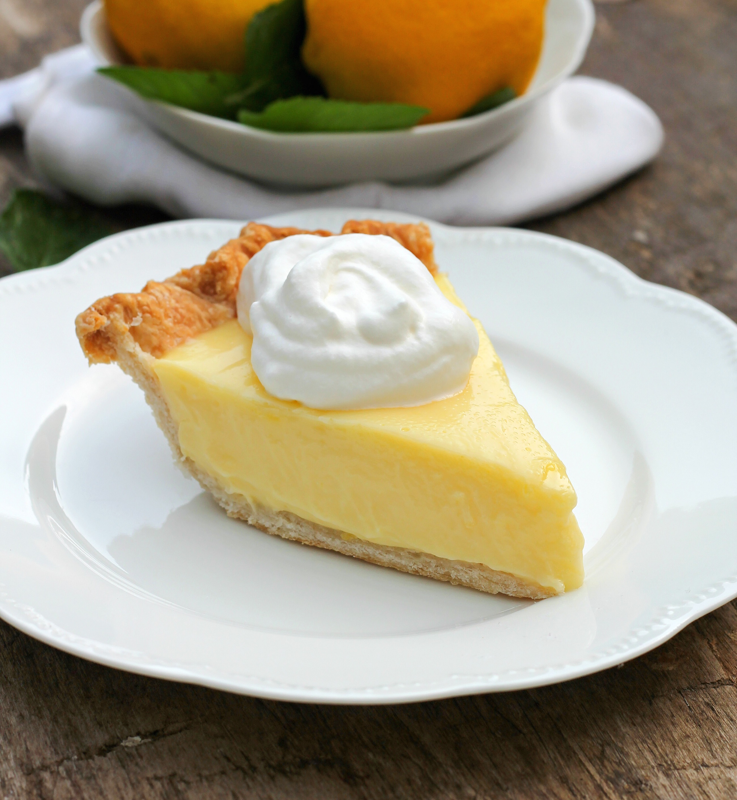

Lemon Pie

Ingredients
Crust
- Butter 150 grams
- Flour 270 grams
- Sugar 4.2 tablespoons
- Whole eggs 2 units
- Egg yolk 1 unit
- Baking powder 2 teaspoons
- Salt A pinch
Filling
- Lemons 4 units
- Eggs 2 units
- Cornstarch 2 tablespoons
- Water 2 cups
- Butter 32 grams
Meringue
- Egg white 5 units
- Sugar 4 tablespoons
Steps
Crust
- Mix the butter with the sugar until it forms a paste
- Later add the whole eggs with the yolk
- With a sifter, sift the rest of the ingredients and add it to the mix
- Mix all together until it forms a dough
- Once done, place it in a recipient, making sure to make a border with the excess of the dough on the sides of it to contain the filling later
- Place it on the oven until the dough is golden
Filling
- In a pot on low heat, add all the ingredients and whisk with a wooden spoon until it thickens
- Once thickened, place it on top of the crust
Meringue
- Whisk with a whisker the whites while you add the sugar until all the sugar is disolved and it stays in place once you remove the whisker
- Place it on top of the filling in form of little cones and put it in the oven for 1 or 2 minutes or until the cones golden